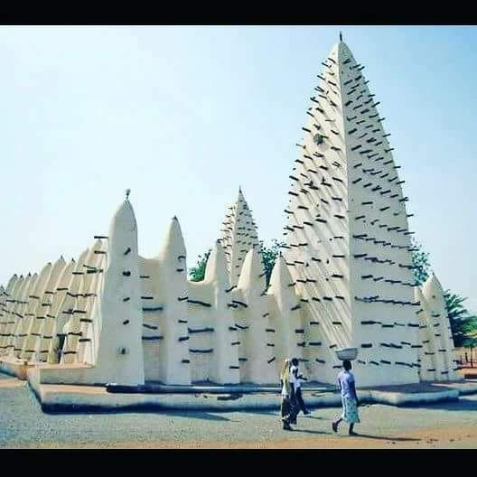

Description et Historique

Historique
Construite à la fin du XIXe siècle (vers 1880), elle est le fruit d'un accord politique et religieux. Sa construction a été dirigée par l'imam Sakidi Sanou.
Description
C'est le monument le plus célèbre de la ville. Elle possède un style architectural soudano-sahélien unique. Elle est faite de terre crue (banco) et de morceaux de bois qui sortent des murs.